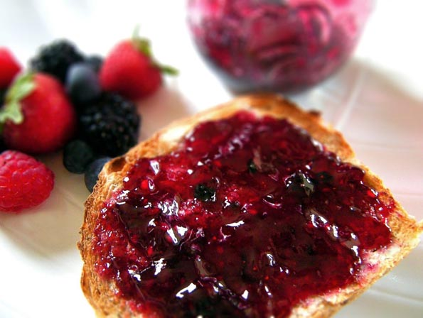

Ingredients
Method
- Slice bread diagonally and soak in milk for 1-2 mins
- Place egg and salt in a bowl and beat well then dip the soaked bread slices in the egg mix
- Heat the butter in a frying pan until it foams, then add the bread slices. Cook the french toast until golden brown, drain on kitchen roll then serve
- Mix sugar and cinnamon in a small bowl and sprinkle over the french toast
Improvements
- Top with jam
- Top with fruit
